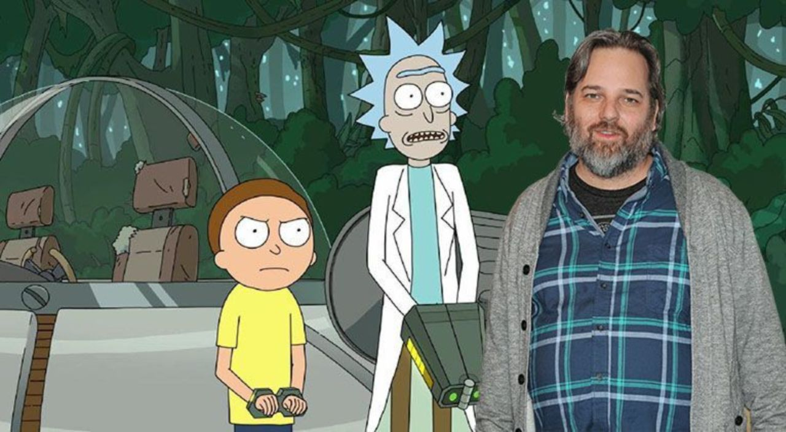
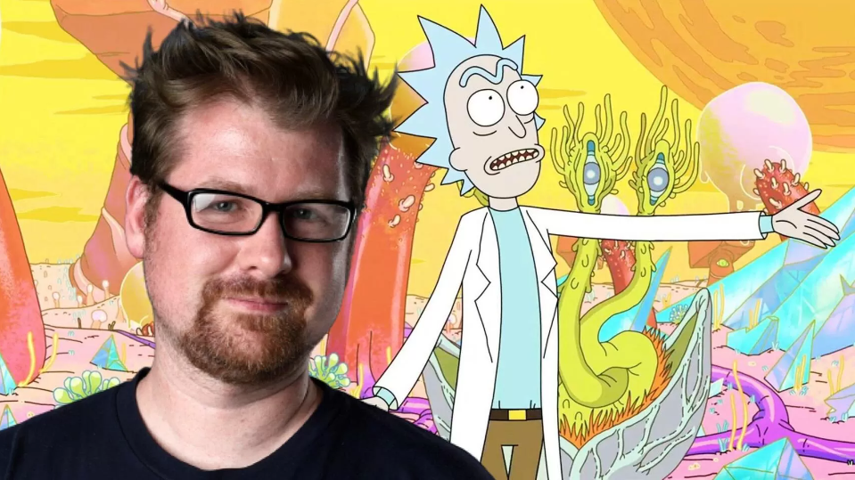

Acerca de los creadores
Dan Harmon




* Serie creada por Justin Roiland y Dan Harmon *
Rick Sánchez es un ejemplo del típico científico loco. Es
irresponsable, alcohólico, un genio egoísta, un poco depresivo y,
claramente, está demente.
Después de haber desaparecido por casi 20 años, Rick llega de
repente a la casa de su hija Beth. Por diferentes razones, termina
mudándose con ella y su familia. Beth le da la bienvenida con los
brazos abiertos pero, su esposo Jerry, no está demasiado emocionado
por la nueva dinámica familiar.
La llegada de Rick hace que sus nietos (Morty y Summer) vivan toda
clase de locas aventuras de ciencia ficción; mientras la relación
entre Beth y Jerry se ve en problemas por ello.
Rick convierte el garaje en su laboratorio personal y se pone a
trabajar en todo tipo de artilugios y máquinas peligrosas. A su vez,
el abuelo obliga a su nieto, Morty, a acompañarlo a vivir aventuras
interdimensionales gracias a un artefacto que le permite acceder a
infinitas dimensiones, a pesar de la oposición de la familia.